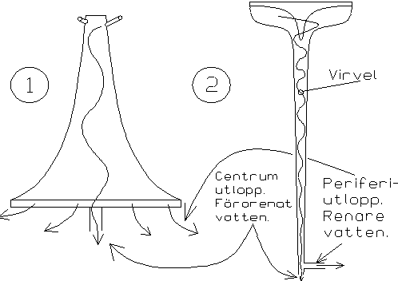

the VORTEX WORLD
water purification
|
| according to Viktor Schauberger |
|
by Curt Hallberg |
| How it all started back in the summer of 1995. That summer we started the water purification project here in Malmö. The purpose was to investigate Viktor Schaubergers ideas on water purification. We, the Malmö group are: Curt Hallberg, Lars (Lasse) Johansson and Morten Ovesen. During winter and spring we built a lab and some production equipment for transparent barrels. A great deal of information was searched for and analyzed. We built different experimental devices, on these we will perform systematic tests. The purpose was to verify parts of the experiments that were performed at the Technical University in Stuttgart 1952. First of all we planned to compare two different types of entrance barrels. The first type has a square shape and minimizes the creation of a vortex. The other has rotation symmetry with a smooth fitting to the tube. (see picture (2)). Tubes and hoses are identical for the both arrangements. With these two types of barrels we wanted to investigate how the shape of the inlet barrel influences the creation of vortices. We also investigated other types of water purification devices such as the Aquagyro type and other types of separation devices. Using these different devices we investigated the potential of the technique regarding purification and treatment of: fresh water, waste water and industrial process water.  Example of vortex technique: (1) the Aquagyro type, (2) the Stuttgart experimental type. (Centrum = center, utlopp = outlet, förorenat = polluted, periferi = peripheral, renare = purified, vatten = water) The principle is to lead water in a big vortex inside a tube. A large amount of the polluting particles is then gathered in the center axis of the vortex. Changes of the chemical properties in the water have been reported i.e. changes of the content of oxygen, precipitation and bonding of metal ions. Preliminary tests indicate that a multiplied centripetal movement is applied on the media i.e. spirals within spirals. This movement creates centripetal forces that concentrate the particles in downward space spiral around the central axis. Our intentions were to investigate these phenomena more systematically and see if we could find any useful types. Some innovations or products that uses a similar technique have not been found, but we have not yet found any systematic view over the field. Our approach was to find a complete view as possible and then continue with the most promising techniques. Viktor Schauberger has reported light phenomena emitting from the tube, something that can derive from rotation excitation. Schauberger also build different kinds of free energy machines, all based on the spiraled shape of the movement. Our opinion is that the experiments with the water purification device can give some of the answers on how the interaction with ZPE is done. In the future we will continuously give information on how the development work proceeds in FNYSIK and on Vortex World. An important thing is that one more research group is needed. This group should involve at least 3-4 persons. There is a need for exchanging ideas and to discuss results with accurate persons. To verify and prove the repeatability of the experiments is also of great importance. Therefore we encourage you to join a group and start to investigate these phenomena. Then we can move on in a broad front simultaneously and give each other different views and approaches. Please contact us in the Malmö group direct, or via the Swedish Association for New Physics. |
"The principle is to lead water in a big vortex inside a tube. A large amount of the polluting particles is then gathered in the center axis of the vortex." |